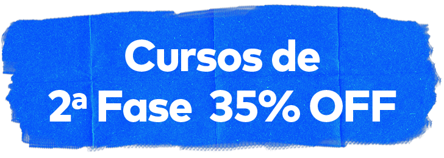
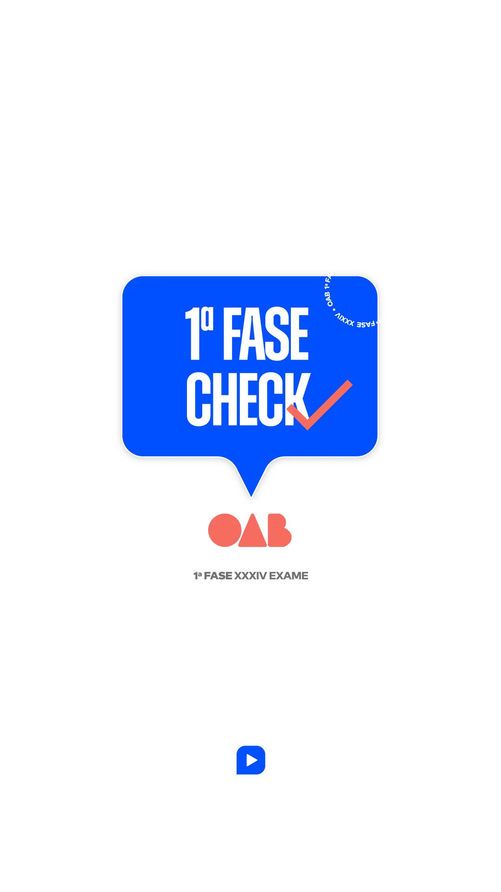

Nossos professores especialistas em OAB comentam as questões e divulgam o resultado extraoficial da prova de primeira fase para você simular seu resultado, ficar por dentro das questões passíveis de recurso e já começar a programar seus próximos passos.
23/10 às 17h30 Correção e Gabarito OAB Correção Extraoficial Ceisc
Assista a correção e o gabarito extraoficial do Ceisc. Prova comentada por especialistas em OAB 1ª fase 36º Exame de Ordem Unificado 2022 - Ao Vivo hoje 23/10/2022
ENVIE PARA SEU AMIGO(A)

+
Cursos para 2ª fase. Até 35% OFF*.
Escolha sua área abaixo e estude com o método que já aprovou mais de 200 mil advogados.
Adquira hoje um de nossos cursos de 2ª Fase e ganhe:
Curso de Prática Jurídica
Você irá receber um curso com abordagem de temas gerais à gestão de um escritório, parcerias relevantes, como ter uma postura proativa na busca de clientes, como fazer o marketing digital do escritório e, o mais importante, abordar as áreas alternativas do direito que são ainda pouco exploradas no mercado.
Todos os benefícios de ser aluno Ceisc
Cronogramas de estudos direcionado e completaço;
Planner de estudo para o aluno fazer sua própria organização;
Mentorias;
Canal de telegram para contato entre os professores e alunos dos cursos;
Revisão Turbo exclusiva para alunos;
Aulas complementares e e-books;
Correção gratuita de recursos (personalizada e individual por aluno);
Conteúdos e peças do zero;
Preparação para a OAB e vida profissional;
7 simulados com correção em vídeo, sendo 4 com correção personalizada por profissionais da área jurídica;
Pimenta bueno lojas de conveniência ldta está realizando ampla divulgação...
A
C
51
56
54
54
Com o objetivo de obter tratamento médico adequado e internação em hospital particular...
A
52
54
56
52
Proposta uma demanda judicial com a presença de 150 autores no polo ativo...
B
53
52
53
57
João ajuizou ação de indenização por danos materiais e morais contra Carla...
C
54
53
55
51
No âmbito de um contrato de prestação de serviços celebrado entre as sociedades empresárias...
C
55
55
57
53
Paolo e Ana Savia, casados há mais de 10 anos, sob regime de comunhão parcial de bens...
D
56
51
52
56
Pedro, representado por sua genitora, propõe ação de alimentos de face de João ...
A
57
57
51
55
Paulo Filho pretende ajuzar ação de cobrança em face de Arnaldo José...
C
58
61
59
61
Para satisfazer sentimento pessoal, já que tinha grande relação de amizade com Joana, Alan, na condições de funcionário, deixou de praticar ato de ofício em...
C
59
62
58
62
Em razão de grande evento de caráter religioso que ocorreria no país, com previsão de chegada de milhares de estrageiros...
D
60
63
60
58
Breno, policial civil, estressado em razão do trabalho, resolveu acampar ...
D
61
60
63
63
Natan, com 21 anos de idade, praticou. no dia 03 de fevereiro de 2020...
A
62
58
61
60
No dia 31/12/2022, na casa da genitora da vótima, Fausto, com 39 anos...
A
63
59
62
59
Paulo foi condenado, com trânsito em julgado pela pratica de crime de lesão corporal grave...
C
64
66
64
64
Caio, primário e de bons antedencentes, sem envolvimento pretérito...
C
65
64
65
66
Rodrigo responde ação penal pela suposta prática do crime de venda irregular...
B
66
69
69
67
Joel está sendo processoado por cirme de estelionato na Vara Criminal...
D
67
67
68
69
Tendo sido admitido a cursar uma universidade nos Estados Unidos da América ..
D
68
68
66
65
Policiais militares, ao avistarem Jairo roubar um carro no município de Toledo (PB)...
B
69
65
67
68
Magda é servidora pública federal, trabalhando como professora em Instituição de Ensino Superior...
D
70
71
71
75
Sheila e Irene foram admitidas em uma empresa de material de construção...
C
71
72
75
70
A sociedade empresária Transportes Canela LTDA, que realiza transporte rodoviário...
C
72
70
70
72
Rogéria trabalha como eletricista na companhia de energia elétrica da sua cidade...
B
73
73
74
74
Pedro Paulo joga futebol em um clube de sua cidade...
B
74
75
73
73
Paulo Sampaio foi chamado para uma entrevista de emprego em uma empresa de tecnologia...
B
75
74
72
71
A churrascaria Boi Gordo tem movimento variado ao longo de diversos meses do ano...
A
76
79
78
80
Em determinada reclamação trabalhista, que se encontra na fase de execução...
A
77
77
79
76
Rosimeri trabalhaou em uma sociedade empresária de produtos químicos de 1990 a 1992...
A
78
80
76
77
As entidades, mesmo as filantrópicas, podem ser empregadoras...
A
79
78
80
78
Seu escritório atua exclusivamente na área trabalhista e participará de uma licitação...
A
80
76
77
79
Jeane era cuidadora de Dulce, uma senhora de idade que veio a falecer. A família de Dulce providenciou o pagamento...
C
Nº das questões
Enunciado
Resposta
Sobre o gabarito: O gabarito extraoficial do Ceisc é feito pelos nossos professores, especialistas em OAB, a partir da finalização da prova, às 17h. Preparamos esta central para que você possa acompanhar em tempo real às primeiras impressões sobre a prova e ter acesso a um gabarito completo, assim como são os cursos do Ceisc.
Quando sai o gabarito preliminar da prova da 1ª fase do 36º Exame OAB? 23/10/2022, a partir das 18h - Divulgação do gabarito preliminar da prova objetiva (1ª fase)
Como irá funcionar?
1 Clique na cor da sua prova (tipo 1 branca, tipo 2 verde, tipo 3 amarela ou tipo 4 azul), confira o enunciado e o gabarito da questão.
2 Marque as questões que você acertou, procure pelos enunciados, confira as questões anuladas ou passíveis de recurso
3 Clique em “Verificar”. O resultado aparecerá na tela e você poderá compartilhar com seus amigos e familiares. Não esquece de marcar o @cursoceisc, ein?
FAQ
Tire todas as suas dúvidas
Quando saem os resultados da 1ª Fase da OAB?
07/11/2022 - Resultado preliminar da prova objetiva de 1ª Fase
24/10/2022 (12h) a 27/10/2022 (12h) - Prazo recursal contra o gabarito preliminar da 1ª fase
08/11/2022 (12h) a 10/11/2022 (12h) - Prazo recursal contra o resultado preliminar da 1ª fase (erro material)
21/11/2022 - Divulgação do resultado final da 1ª fase (prova objetiva). O horário de divulgação pode variar.
1ª fase
Onde consulto o resultado da prova de 1ª fase 36°?
O resultado da prova de 1ª fase será divulgado no endereço eletrônico FGV Conhecimento.
Quando sai o resultado da 1ª fase OAB Exame 36º?
Os gabaritos preliminares da prova objetiva serão divulgados até as 22h do dia 23 de outubro de 2022, observado o horário oficial de Brasília/DF, e o resultado preliminar da prova objetiva será divulgado na data provável de 7 de novembro de 2022.
Observações sobre a prova de 1ª fase da OAB Exame 36º
O examinando não deverá identificar-se de qualquer forma nos campos do formulário destinados às razões de seu recurso, sob pena de ter seu recurso liminarmente indeferido.
A partir da data de divulgação dos resultados da prova objetiva, será possível ao examinando, por meio de consulta individual no endereço eletrônico FGV Conhecimento, acessar a imagem digitalizada da sua folha de respostas, de modo a constatar que a nota que lhe foi atribuída corresponde à correção procedida, considerando o gabarito oficial definitivo, após apreciados e decididos os recursos referentes a esta fase.
Recursos cujo teor desrespeite a banca, a FGV, a OAB ou qualquer das Seccionais serão liminarmente indeferidos.
Recursos
Qual o prazo recursal da 1ª Fase?
12h de 24/10/2022 até 12h de 27/10/2022 - Prazo recursal contra o gabarito preliminar da 1ª fase
12h de 08/11/2022 até 12h de 10/11/2022 - Prazo recursal contra o resultado preliminar da 1ª fase (erro material)
Considera-se sempre o horário oficial de Brasília/DF.
O que acontece quando uma questão da prova de 1ª fase é anulada?
No caso de anulação de questão integrante da prova objetiva pela Coordenação Nacional do Exame de Ordem Unificado, em âmbito administrativo, a pontuação correspondente será atribuída a todos os examinandos indistintamente, inclusive aos que não tenham interposto recurso.
No caso de anulação de questão da prova objetiva, a pontuação correspondente não será atribuída novamente ao examinando que, no resultado preliminar, já havia computado o acerto.
O Ceisc vai ajudar os alunos com os recursos?
Sim! Os professores fazem uma análise criteriosa da prova para que seja possível identificar alguma questão passível de anulação! No entanto, Fique ligado em nossas redes sociais e em nosso canal do YouTube!
O Ceisc não interpõe recursos, mas auxilia seus alunos no processo, disponibilizando fundamentação para recursos e tutoriais de interposição.
Onde consultar o resultado dos recursos?
Todos os recursos serão analisados e os resultados serão divulgados no endereço eletrônico http://oab.fgv.br.
2ª fase
Como é a prova da OAB 2ª fase?
1ª parte: Redação de peça profissional, valendo 5,00 (cinco) pontos, acerca de tema da área jurídica de opção do examinando e do seu correspondente direito processual, indicada quando da sua inscrição, conforme as opções a seguir:
a) Direito Administrativo;
b) Direito Civil;
c) Direito Constitucional;
d) Direito do Trabalho;
e) Direito Empresarial;
f) Direito Penal;
g) Direito Tributário.
2ª parte: Respostas a 4 (quatro) questões discursivas, sob a forma de situações-problema, valendo, no máximo, 1,25 (um e vinte e cinco) pontos cada, relativas à área de opção do examinando e do seu correspondente direito processual, indicada quando da sua inscrição.
Duração: 5 horas
Dicas de estudo para 2ª Fase da OAB
Tenha o hábito de manusear seu vade mecum durante os estudos, para conseguir encontrar o que precisa durante a prova;
Pratique a elaboração de peças antigas e resolva questões;
Crie o hábito de escrever à mão com caneta semelhante a que utilizará no dia da prova e tente fazer sua letra sempre o mais legível que conseguir;
Treine a identificação correta das peças.
Conheça o seu vade mecum! Ele é seu aliado e é importante que você tenha agilidade em manuseá-lo no dia da prova;
Tenha bons hábitos alimentares e beba bastante água, seu corpo e sua mente precisam estar nas melhores condições;
Faça pausas nos estudos para respirar e fazer alongamentos;
Tire dias de folga para fazer o que gosta, mas lembre-se de voltar à rotina no dia seguinte!
Quando saem os resultados da 2ª Fase da OAB?
11/12/2022 - Divulgação do padrão de resposta preliminar da prova prático-profissional
11/01/2023 - Divulgação do padrão de respostas definitivo e do resultado preliminar da 2ª Fase (prova prático-profissional)
12h de 12/01/2023 até 12h de 15/01/2023 - Prazo recursal acerca do resultado preliminar da 2ª Fase
Quando sai o resultado definitivo de 36º Exame da OAB?
26/01/2022 - Decisão dos recursos acerca do resultado preliminar de 2ª fase e divulgação do resultado final do exame.
*Promoção válida até 06/07 **Desconto de 30% OFF (válido até 06/07/2022) + Cupom cumulativo de 5% OFF (GABARITOOAB) nos cursos de 2ª fase OAB XXXV (consulte a validade).
Você marcou
0
questões
#Compartilhe
Você ganhou 5% OFF (acumulativo)
Use o cupom: GABARITOOAB
Pressione a imagem para salvar

🎁 Temos mais um presente
Cupom de desconto 5% OFF (acumulativo) em todos os cursos OAB do Ceisc, com validade até o dia 31/10.
* Desconto de 35% OFF (válido até 31/10/2022) + Cupom cumulativo de 5% OFF (GABARITOOAB) nos cursos de 2ª fase OAB 36º (consulte validade).
** Bônus de Prática Jurídica disponível para inscritos nos cursos de 2ª fase do 36º Exame de Ordem entre os dias 10 /10/2022 e 31/10/2022, às 23:59.
Sobre as questões passíveis de anulação
Como funciona a anulação de questões?
No caso de anulação de questão integrante da prova objetiva, a pontuação correspondente será atribuída a todos os examinandos indistintamente, inclusive aos que não tenham interposto recurso.
No caso de anulação de questão da prova objetiva, a pontuação correspondente não será atribuída novamente ao examinando que, no resultado preliminar, já havia computado o acerto.
Como funciona em caso de alteração de gabarito?
O gabarito preliminar pode ser alterado, de ofício, até a divulgação do gabarito definitivo. Neste caso, a pontuação do examinando será atribuída de acordo com a alteração.